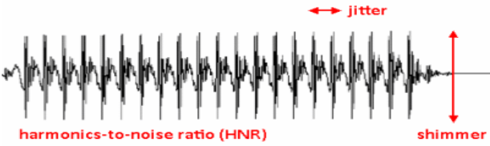
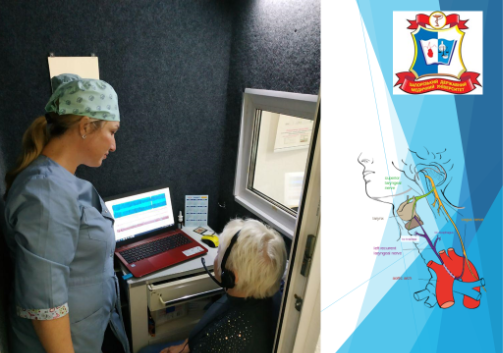
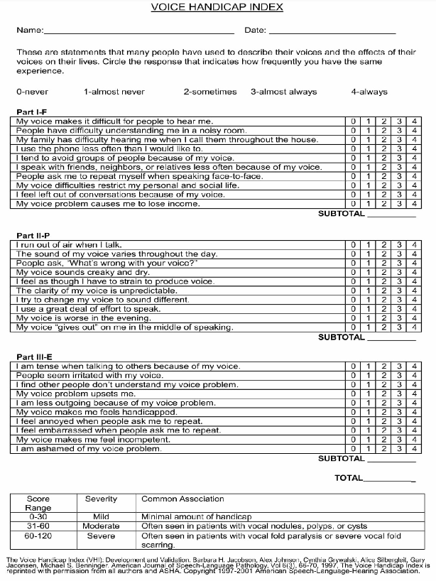

Кожному пацієнту з осиплістю голосу різного ступеня тяжкості проводиться
таке обстеження:
-
Ретельний збір анамнезу захворювання.
-
Загальноклінічні обстеження.
-
Спеціалізований фоніатричний огляд з використанням функціональних
навантажень, який включає:
-
вимірювання часу максимальної фонації (ЧМФ);
-
перцептивна оцінка голосу за допомогою загальноприйнятої шкали GRBAS.
-
* Містить п`ять критеріїв:
- G (grade) – якість голосу (захриплість, сила голосу);
- R (roughness) – грубість, різкість звуку;
- B (breathness) – придихання;
- A (asthenia) – астенічність, слабкість;
- S (strain) – напруження.
* Оцінювання проводиться за чотирма ступенями:
- 0 – відсутність патології;
- I – порушення легкого ступеню;
- II – середнього ступеню;
- III – тяжкого.
-
Відеоендоскопічне дослідження гортані та ЛОР-органів, що дозволяє
здійснити відео- та фотодокументування, що дають можливість формування
доказової бази для експертизи, вирішення спірних ситуацій, а також
дозволяють наочно пояснити пацієнтові характер захворювання та визначити
найбільш адекватну програму лікування.
Також відеоендоскопічне дослідження дозволяє:
- Виявити передракові зміни слизової оболонки для формування груп
ризику для подальшого динамічного спостереження та лікування;
-
Діагностика ранніх форм раку;
-
Оцінка ефективності лікування органічних та функціональних
захворювань гортані;
-
Якісний динамічний контроль за пацієнтами для виявлення місцевого
рецидиву якомога раніше.
-
Ларингостробоскопія за допомогою відеостробоскопа фірми "KARL
STORZ".
Основні параметри ларингостробоскопічної картини:
- Наявність фонаційних коливань голосових складок: збережено з обох
сторін – 1 бал; з одного боку – 2 бали; з обох сторін відсутнє - 3 бали.
- Зміна частоти (регулярності) коливань, тобто синхронності: синхронні,
рівномірні колівання - 1 бал; одна голосова складка коливається з меншою
частотою – 2 бали; безладні, асинхронні колівання – 3 бали.
- Зміна амплітуди коливань: однакова амплітуда голосових складок – 1
бал; розлад з одного боку - 2 бали; двостороннє розлад - 3 бали.
- Зміна фази закриття голосової щілини: повне закриття голосової щілини
становить 1 бал; неповне закриття голосової щілини – 2 бали; немає
постійної голосової щілини – 3 бали.
- Зміна фази відкриття: краї голосових складок помірно та рівномірно
увігнуті -1 бал; вертикальний компонент збільшено або відсутній – 2 бали;
різні рівні голосових складок – 3 бали.
- ІВН (індекс вібраторної недостатності): загальну кількість набраних
балів поділяли на 5 (норма = 1 бал).
-
Акустичний аналіз голосу за допомогою програмного забезпечення
«Praat V 4.2.1».
-
Акустичний аналіз голоса – це об’ективний неінвазивний метод оцінки
голосової функції, який базується на запису спектрограми і проведенні
аналізу його акустичних характеристик і є невід’ємною частиною основного
протокола оцінки голосу, затвердженого Європейським ларингологічним
товариством.
-
Jitter- міра варіабельності частоти основного тона, відображає ступінь
частотної нестабільноcті голосу.
-
Shimmer - міра варіабельності амплітуди коливань, відображає ступінь
амплітудної нестабільноcті голосу.
-
NHR (noise-to-harmonics ratio) – відображає співвідношення негармонійних
(шумових) і гармонійних компонентів в голосовому спектрі.


-
Оцінка впливу голосових розладів на якість життя.
Використовуємо міжнародно визнаний опитувальник VOICE HANDICAP
INDEX (VHI-30), який є інструментом для кількісної оцінки
біопсихосоціального впливу голосової проблеми.
Шкала оцінює:
- функціональні (F – funсtional),
- фізичні (P – physical)
- емоційні (E – emotional) розладИ голосу.
Складається з 30 питань (кожний блок – з 10):
- кожний питання оцінюється пацієнтом у балах від 0 до 4.
- Мінімальна кількість балів складає – 0, максимальна – 120.
- Результат від 0 до 30 відповідає легкому ступеню тяжкості,
- від 31 до 60 – помірній
- від 60 – тяжкий

-
Визначення співочого голосу і спірних питань щодо цього:
Діагностика співочого голосу (вокально –педагогічна):
Чоловічі і жіночі голоси поділяються на: високі (тенор – сопрано),
середні (баритон – меццо-сопрано) і низькі (бас-контральто).
-
Сопрано – «до» першої октави – «до» третьої октави;
-
Меццо-сопрано – «ля» малої октави – «ля» другої октави;
-
Контральто – «фа» малої октави – «фа» другої октави;
-
Тенор – «до» малої октави – «до» другої октави;
-
Баритон – «ля» великої октави – «ля» першої октави;
-
Бас – «фа» великої октави – «фа» першої октави.
Діагностика співочого голосу (лікарська):
-
Для високих голосів характерні:
-
вузьке і глибоке тверде піднебіння,
-
довжина голосових складок 15-17 мм, ширина 2,5-3 мм.
-
вузькі кільця трахеї, які не доступні для огляду при ларинготрахеоскопії.
-
Середні голоси:
- середньої ширини і середньої глибини тверде піднебіння,
- довжина голосових складок 17-20 мм, ширина 3-3,5 мм.
- кільця трахеї досить ясно видно і помітні.
-
Низькі голоси:
- широке і глибоке тверде піднебіння,
- довжина голосових складок 19 -22 мм, ширина 3,4-4,5 мм.
- потужні кільця трахеї, які ясно видно при ларингоскопії.
-
Профілактичні огляди представників голосомовних професій
(педагогів, вокалістів, акторів).
Існує думка, що педагоги - це «особливі люди», які, як правило, через
гіпервідповідальність і важливість своєї роботи не мають часу своєчасно
звернутися за допомогою до лікаря, забувають, що хворобу легше
попередити, ніж лікувати. Саме тому потрібен скринінг - діагностика
порушення голосу.
-
Дослідження слухової функції: акуметричне та аудіометричне
обстеження.